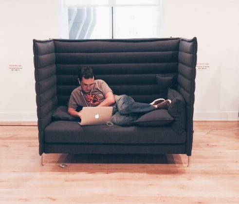
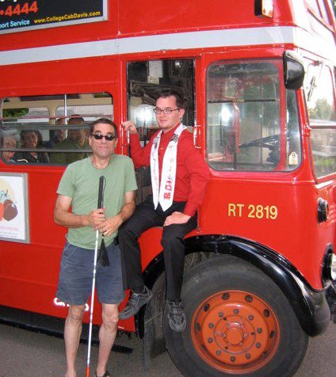

My Background

I have worked several years in human resources and operations. I have a proven track record both as an HR Generalist and Recruiter, I have worked in a wide array of different environments, I have managed teams of over 30 employees, I am a fast learner, and I am a hobbyist software/game developer. My education and unique work experiences make me a great fit for a company seeking an HR professional who speaks the language of developers.

While in college, I started as a bus driver, and I worked my way through various supervisory positions until I became the recruitment/retention coordinator for the city transit company, and the Director of a bus charter rental company; managing operations, administrations, and finances. I accomplished significant goals - like increasing revenue, increasing the fleet size, and creating a company website - and I hired, supervised, and mentored over 30 direct reports.
Playing the piano for over 20 years and working my way through business school and college helped sculpt my strong work ethics and focus. While working over 40 hours and being a full-time student, I completed my MBA program magna cum laude - with a 3.9 GPA. I thrive in work environments where I am surrounded by others who are similarly dedicated to their crafts, and exctied about what they do.